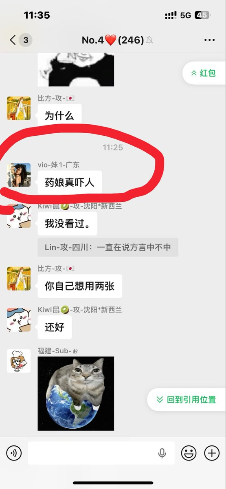
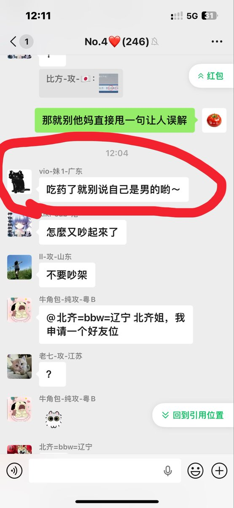

yuer🍥
@yuerQwQ
一根筋两头堵了（
老保们怎么不统一一下话术）
一边有人说“你永远是男的”，一边又有人说“吃药就别说自己是男的”
这下跳出三界之外不在五行之中了😀


yuer🍥
@yuerQwQ
这下一根筋两头堵了（
老保们怎么不统一一下话术）
一边有人说“你永远是男的”，一边又有人说“吃药就别说自己是男的”
这下跳出三界之外不在五行之中了😀 https://t.co/wok7h3YY3k
Jeff姐夫
@Jeffrey20011221
有的人是不是脑子有病？你攻击群体就算了，你这句“吃药了就别说自己是男的呦～”几个意思？我没做srs、没改证，我不带入女性身份是在我这里认为的对女性最起码的尊重。有病就去治好不好… https://t.co/nMZNQisthQ